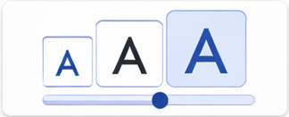
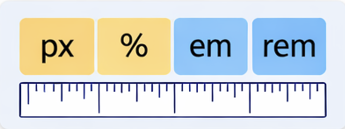
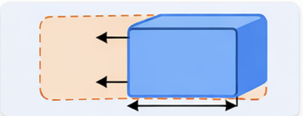

CSS дозволяє відокремити структуру сторінки від її оформлення, що робить код зрозумілішим і зручнішим у розробці.
Одиниці вимірювання в HTML та CSS використовуються для визначення розмірів тексту, зображень та інших елементів вебсторінки. Під правильною побудовою одиниць означає читабельність літератури та загальний вигляд сторінки.
Під час створення вебсайту розробник повинен розуміти, як саме працюють різні типи одиниць вимірювання та у яких випадках їх доцільно застосувати.
Абсолютні одиниці мають фіксоване значення і не залежать від інших елементів сторінки. Найпоширенішою одиницею є піксель (px), що означає точний розмір елемента на екрані.
Іншими прикладами абсолютних одиниць є сантиметри (cm), міліметри (mm) та пункти (pt). Однак у сучасній веброзробці вони використовуються рідше.
Абсолютні одиниці забезпечують точність, але не завжди гарантують адаптивність.
Відносні одиниці залежать від значення шрифту або параметрів вікна браузера. Наприклад, одиниця em залежить від розміру шрифту батьківського елемента, а rem — від розміру шрифту кореневого елемента сторінки.
Також часто використовуються відсотки (%), які дозволяють задавати ширину або висоту тексту відносно іншого елемента. Одиниці vw та vh визначають розмір відносно ширини та висоти вікна браузера.
Одиниці вимірювання застосовуються для налаштування:
Вибір правильної одиниці дозволяє зробити сторінку більш зручною для читання та адаптивною до різних пристроїв.
Більше деталей щодо відповідних тем можна знайти на офіційних ресурсах:
Документація CSS на MDN Web Docs


